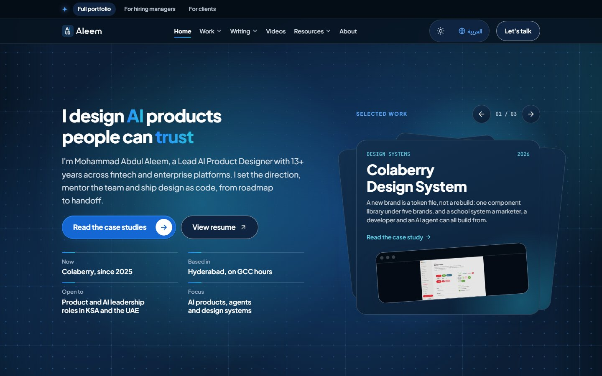
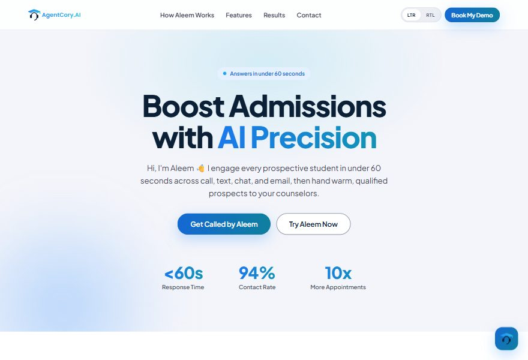
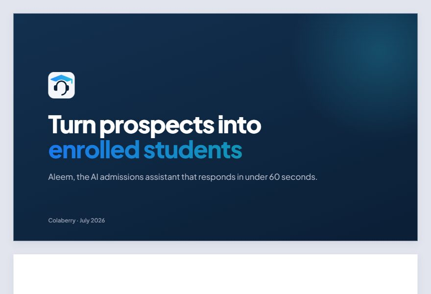
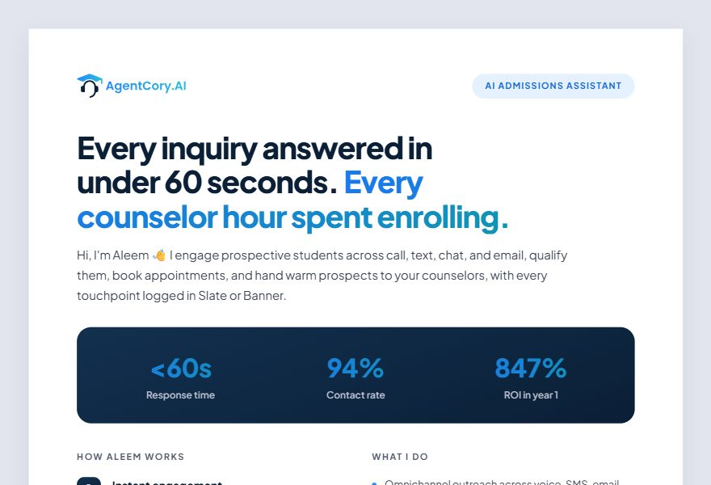
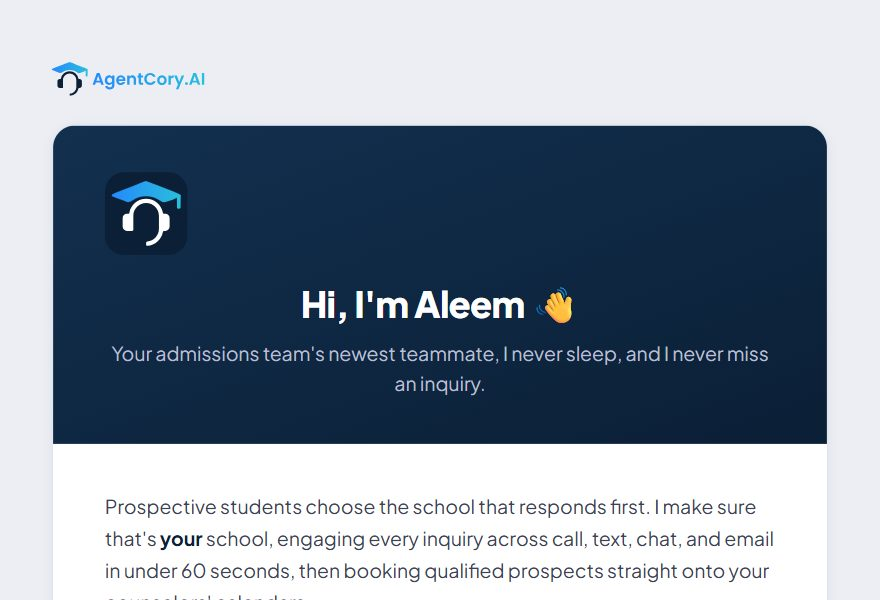

AI is fast.
Trust is slow.
I design the gap. This is the system I design it with: tokens, 58 React components and 25 templates for AI that shows its sources, says how sure it is and asks before it acts.
Five questions, answered up front.
Every AI surface answers them before anyone has to ask. Each answer is a component, and everything below is the shipping React code, not a picture of it.
- Is this AI?Label it, every time. An AI never writes as if it were a person.
- Where did it come from?Every stated fact carries a Citation. No sources, no facts.
- How sure is it?ConfidenceMeter says it in words and pips, never colour alone.
- What is it doing?AgentSteps names every status: Working, Needs you, Failed.
- Can I stop or undo it?Streaming has Stop. Anything that sends, spends or deletes waits for an ApprovalCard.
Live demo loads with JavaScript. Open the AIResponse preview.
58 components, one bundle.
Every component has a live preview with light, dark and right-to-left states, and an API page with its props, parts and examples. Open any name to see it run.
AI patterns
7Trust, made visible: sources, confidence, steps and approval.
- ConfidenceMeterHow sure an AI result is: five pips plus words ("High confidence"), so it never relies on colour alone.API
- CitationInline numbered marker that ties a claim to its source; links to it when there is a URL.API
- SourceListNumbered source tiles, used by AIResponse and available for custom layouts.API
- AIResponseOne AI answer, designed to earn trust: it says it is AI, shows how sure it is, cites its sources inline and lists…API
- AgentStepsA live log of what an agent is doing, step by step, so people can follow the work and step in when it needs them.API
- ApprovalCardHuman in the loop: an agent proposes an action and waits.API
- PromptInputThe composer for talking to an AI: grows with the text, sends on Enter (Shift + Enter for a new line), offers…API
Core
6The pieces on every screen.
- CoryMarkThe Cory mascot mark, kept for the admissions assistant case study.API
- AvatarRounded-tile avatar for people, the AI assistant, Aleem himself, and the admissions case-study mascot.API
- BadgePill label for statuses and inline metrics, the chips that pepper Aleem's marketing and dashboards.API
- ButtonPill-shaped CTA button, use for any primary or secondary action; one primary (brand gradient) per view.API
- ChipSelectable pill for filter bars, tag pickers, and toggles, the interactive counterpart to Badge.API
- IconButtonRound icon-only button, close, menu, play, mute, theme toggle.API
Forms
7Labelled, validated, keyboard-first.
- CheckboxLabelled checkbox for consent, multi-select lists, and bulk selection.API
- InputLabelled text field with soft rounding and a blue focus ring.API
- SelectDropdown for 5+ mutually exclusive options (institution type, role, time zone).API
- ToggleSwitch for settings that take effect immediately (notifications, autoplay, dark theme in a settings page).API
- RadioGroupOne choice from a short list (2 to 5 options), all visible at once.API
- TextareaMulti-line text for messages, briefs and feedback.API
- DateFieldA date, or a date and time.API
Feedback
9Every message names what happened and what to do next.
- FeedbackIconThe shared tone glyph used by Alert, Toast and Dialog.API
- AlertInline feedback banner for page- or section-level messages that stay until resolved (a Toast is for brief…API
- DialogModal for a focused task (short form, confirmation) that must finish before the page continues.API
- EmptyStateUse this wherever a list, panel or search result has nothing to show.API
- ToastBrief confirmation after an action ("Saved", "Call booked", "Message sent"), gone in 6 seconds.API
- ToastRegionHosts toasts in one live region so screen readers announce them.API
- TooltipNames an icon-only control or clarifies a short label on hover and keyboard focus.API
- ErrorStateA whole region that failed.API
- StateViewOne region, every state, one prop.API
Status
5Any wait over 300 ms shows a state.
- ProgressBarProgress when it can be measured (uploads, imports, multi-step onboarding) or an indeterminate sweep for a…API
- SkeletonThe bones of a loading layout.API
- SpinnerActivity indicator for one action or a small area where the layout is not known yet.API
- SkeletonPresetReady-made skeletons with the same geometry as the real components, so the swap from loading to loaded never moves…API
- LoadingRegionWrap any region that loads.API
Surfaces
6Containers, themes and direction.
- CardBlank surface tile.API
- DirectionToggleReading-direction switch.API
- MediaFrameImage / video in a rounded, aspect-locked tile.API
- TabsTabs, segmented control, or filter bar, one component, animated indicator.API
- ThemeToggleLight and dark theme switch.API
- AccordionQuestions and answers, process details or long specs that most readers skip.API
Content
7Proof, stories and conversation.
- ChatBubbleOne message in a chat: the AI assistant or Aleem at inline-start, the visitor at inline-end, and quiet system notes…API
- FeatureCardBenefit/feature card: icon tile, heading, copy, and capability tags.API
- StatCardHeadline metric: Aleem leads with big numbers everywhere.API
- TestimonialCustomer testimonial card: leads with a gradient result metric, then quote and attribution.API
- TypingIndicatorShow between the visitor's message and the reply, so the pause reads as "thinking", never as "broken".API
- ProjectCardA case study in the portfolio grid: cover, context line (client, role, year), title, one-line outcome, the proof…API
- TimelineExperience or milestones, newest first: period, title, organisation, place, a summary and optional highlights.API
Navigation
6Where you are and where you can go.
- SiteHeaderThe top bar of a site: brand, primary links and one action.API
- BreadcrumbShows where a page sits, and lets people step back up.API
- PaginationMoves through pages of a list or table.API
- SiteFooterThe bottom of a site: who it is, where everything is, and the legal line.API
- MenuA dropdown of actions on one thing: the "More" on a card or table row.API
- StepperShows progress through a short, ordered flow of 2 to 6 steps: an enquiry form, onboarding, a booking.API
Brand
2The signature graphic and the page opener.
- SignalPatternThe brand's signature graphic: rows of pills, like tokens in a design system or words in an AI answer.API
- HeroThe opening of a page: one idea, one gradient phrase, one primary action.API
Icons
1One owned set on a 24 px grid.
Illustrations
1Duotone spot scenes.
- IllustrationAleem spot illustrations: the solid mascot tile is the subject, props around it are duotone shapes from the icon…API
Page examples
1Whole pages that prove the parts fit.
- PortfolioHomeA full portfolio home page built only from this system, to copy from and to prove the parts work together:…API
Navy ink. Signal gradient.
Deep navy for the words that ground you, a blue to cyan sweep for the moments that move you, cool slate neutrals on an off-white surface. Every text pair passes WCAG 2.1 AA in both themes.
Friendly, geometric, extrabold.
Plus Jakarta Sans across the brand, IBM Plex Sans Arabic for Arabic, JetBrains Mono for the numbers that carry the proof.
My portfolio, in production.
The proof that the parts work together. My portfolio runs on this system's tokens, type, logo and AI trust rules, rebuilt as Astro components for speed: dark by default, Arabic as a first-class language, case studies with their sources.

Case studies built on it
- Colaberry Design SystemA new brand is a token file, not a rebuild.
- One kit, five brandsFive brands through one library, each look stored as token data.
- A design system that audits its own productAn audit skill that fixed issues across 97 UAT screens.
- Loan onboarding, built on the systemScreens built strictly from the client's design system.
Four starting points, ready to copy.
Four of the 25 templates, from the admissions assistant case study. Each one is built only from this system.




Proof first, never oversold.
Trust is the subject, so the words have to earn it. Calm, specific and generous, in short sentences and the active voice.
Hi, I'm the assistant on Aleem's portfolio. Ask me about his work.
Has he designed for AI agents?
Yes. Start with "A design system that audits its own product": an audit skill that fixed issues across 97 UAT screens.
I can make mistakes, so every answer links the case study it came from.
Four lines, then build.
One stylesheet carries every token, both themes and the base styles. One script carries every component. No build step.
<link rel="stylesheet" href="https://aiuxaleem.github.io/aleem-aiux-design-system/styles.css">
<script src="https://unpkg.com/react@18.3.1/umd/react.production.min.js"></script>
<script src="https://unpkg.com/react-dom@18.3.1/umd/react-dom.production.min.js"></script>
<script src="https://aiuxaleem.github.io/aleem-aiux-design-system/components/bundle.js"></script>
<script>
const { Button, AIResponse } = window.AleemDesignSystem_3de1ed;
</script>- Use semantic tokens only.
--text-*,--surface-*,--border-*,--action-*. Raw scales belong to tokens.css. - Pick a theme and a direction.
<html data-theme="dark">anddir="rtl" lang="ar", or drop in ThemeToggle and DirectionToggle. - Answer the six states.Default, loading, empty, error, partial and success. StateView renders all six from one status prop.
- Read the API page first.Props, parts and examples for every component live in api/components.
Build your next AI surface with it.
Tokens, 58 components, guidelines and 25 templates in one public repository, consistent by default.